智能访客接待
串联预约、到访核验、门禁权限与路线引导，让接待流程清晰有序。
查看接待演示 ↗OFFICE CLAW · 空间智能体
AI OFFICE 面向真实物理空间，通过 Office Claw 连接机器人、物联网设备与企业系统，让空间感知需求、规划任务并协同执行。
面向企业办公 · 产业园区 · 共享办公空间
01 / 产品与场景
以 Office Claw 为协同入口，连接空间中的人员、设备和服务，让日常办公减少重复操作。
串联预约、到访核验、门禁权限与路线引导，让接待流程清晰有序。
查看接待演示 ↗围绕时间、人数和设备需求，协同会议室预约、参会通知、灯光与空调。
查看会议演示 ↗结合空间使用情况开展能源管理，将故障报修连接到派单和处理记录。
查看运营演示 ↗在线演示为预设场景交互，用于说明产品工作流程；不连接真实门禁、设备或业务系统。
AI OFFICE / 产品与技术
具身机器人与 AIoT 设备联动智能操作解决方案。把自然语言需求转化为可追踪的空间任务，连接设备、业务系统与园区服务。
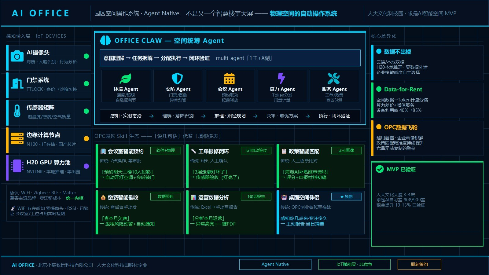
通过统一入口接收目标，结合场景状态与权限生成计划，协调不同智能体、机器人及物联网设备完成任务。
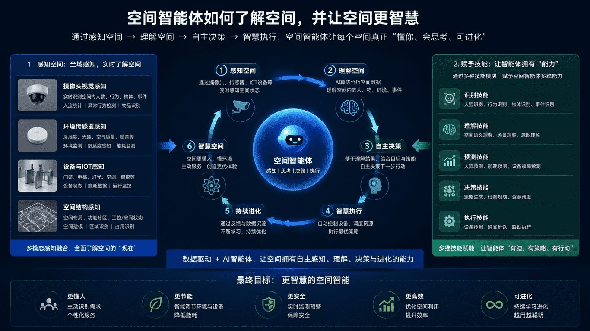
连接多模态感知、场景理解、任务规划与设备执行。
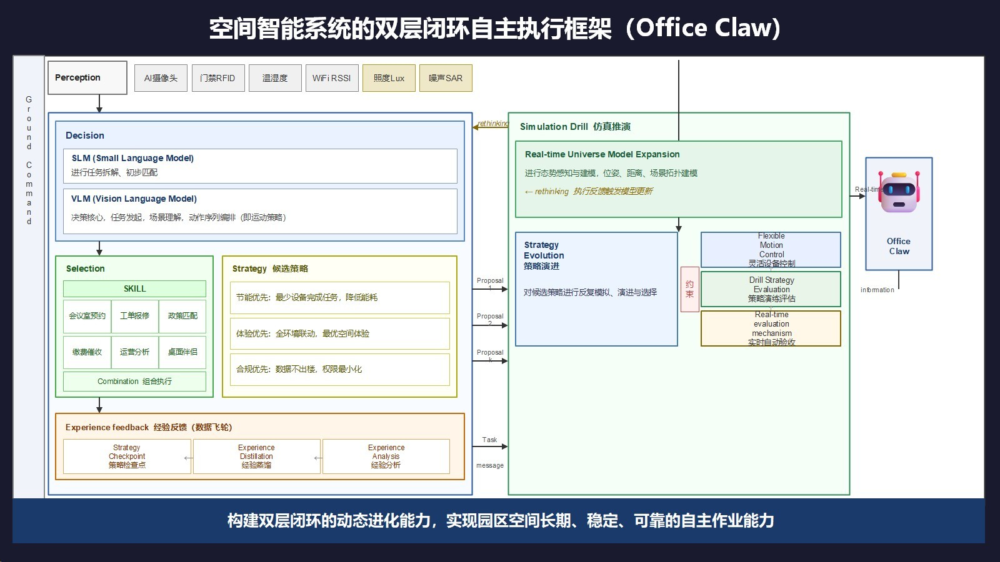
以智能体引擎组织任务，连接设备适配层、业务系统与权限控制。
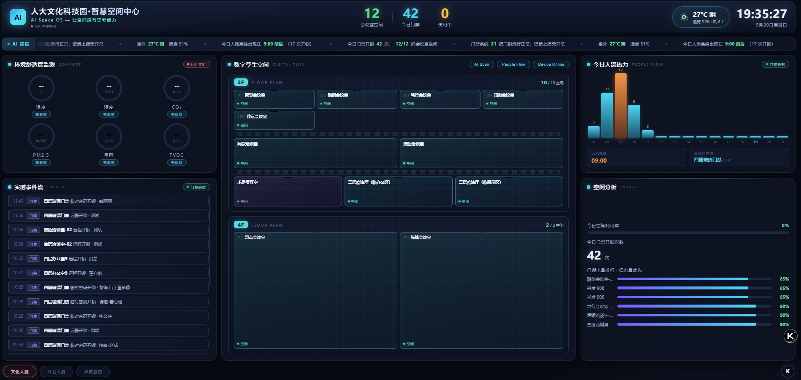
集中查看空间分布、门禁事件、人流热力与环境监测信息。
产品图片展示方案架构与界面，图中数据为截图时的演示内容。点击图片可查看大图。
APPLICATIONS / 应用场景
从空间感知到物理执行，连接机器人、设备和服务，围绕办公、园区、商业与社区需求开展应用。
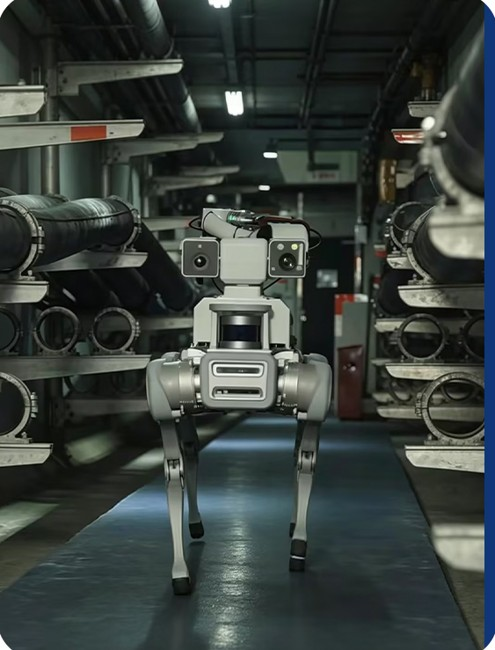
自动检查设备状态，识别异常并上报。
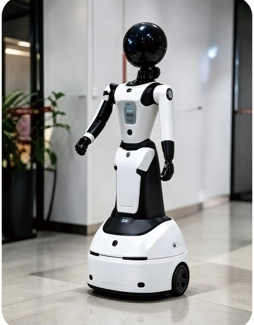
通过语音交互，为访客提供到访指引。
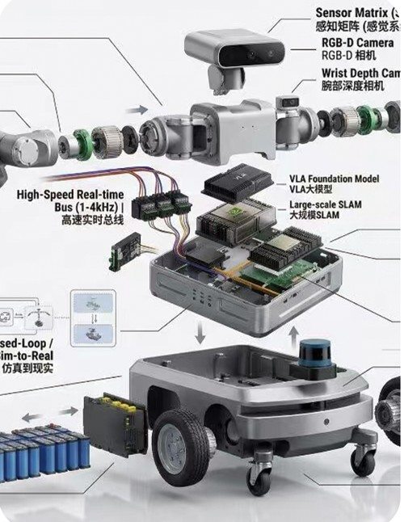
面向文件、快递与物资的空间配送场景。
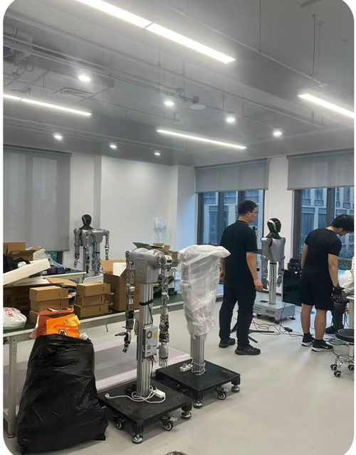
识别设备状态，拍照记录并生成报告。
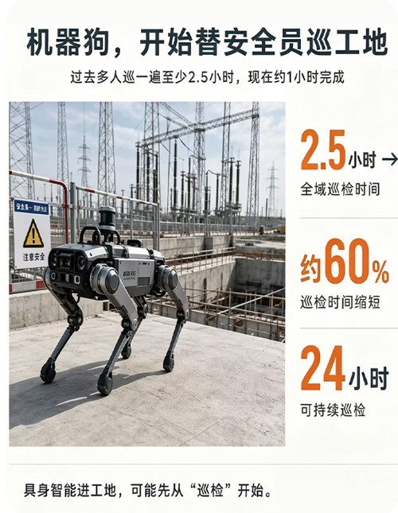
结合异常行为识别与实时告警，辅助空间安全管理。
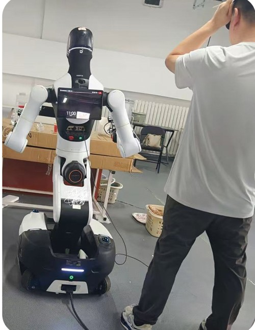
采集环境与空间数据，支持数字孪生与运营分析。
图片为项目应用场景展示，具体功能与设备配置以项目方案为准。
融合摄像头、传感器与物联网设备信息，了解空间状态。
通过 Office Claw 分析需求与场景，生成任务计划。
连接门禁、照明、空调、屏幕与机器人，协同执行。
结合执行反馈与空间数据，改进任务和服务流程。
02 / 技术架构
把物理空间、设备接入和业务流程组织在同一套架构中，围绕具体任务进行协同。
组合隔断、家具、会议室与办公设施，适应空间布局和使用需求的变化。
通过设备接入与编排连接门禁、照明、空调、传感器等空间基础设施。
将自然语言需求拆解为任务，协调设备操作、企业服务与业务流程。
以本地部署、租户隔离和授权执行为设计方向，让任务运行遵循数据边界。
03 / 完整解决方案
为业主、企业与园区提供咨询规划、模块化空间建设、智能系统集成及运营服务，让物理空间与数字能力共同交付。
围绕使用需求、空间条件与运营目标确定方案。
协同模块化装修、家具配置和物联网设备集成。
连接日常服务、设施维护与空间使用反馈。
04 / 关于 AI OFFICE
AI OFFICE 聚焦空间智能体与智慧办公解决方案，由北京小宸致远科技有限责任公司运营。
项目以 Office Claw 为智能协同核心，探索人工智能、物联网与空间服务的融合。在人大文化科技园场景中，围绕办公服务、设备编排、机器人联动与本地智能开展应用实践。
了解产品工作流程 ↗展示与成果
持续参与技术交流、产业展览与创新赛事，让空间智能方案接受真实场景的检验。
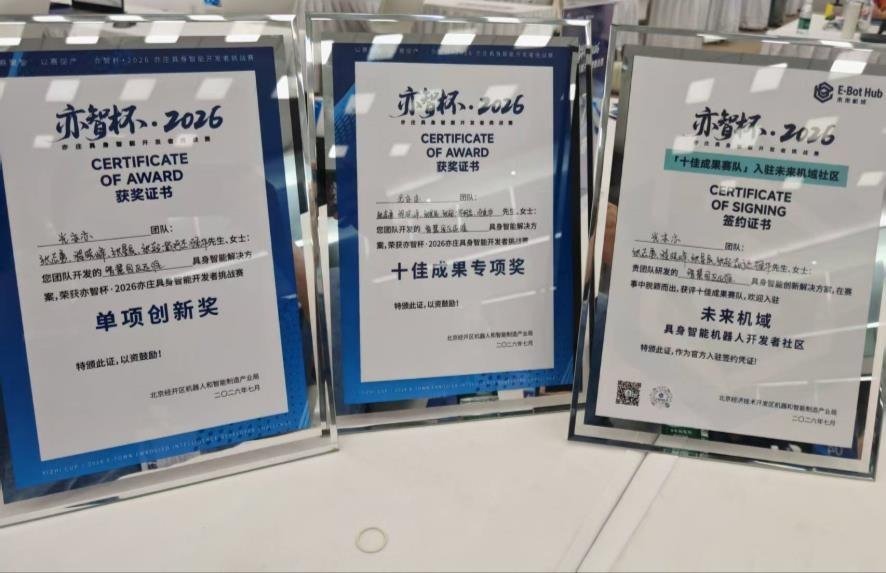
项目材料展示了“单项创新奖”“十佳成果专项奖”及入驻签约证书。
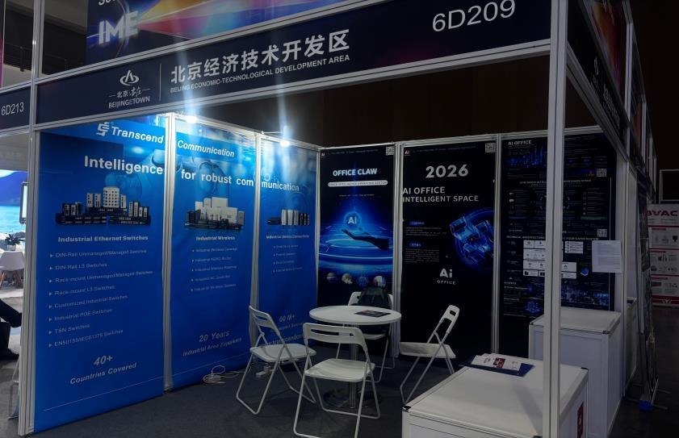
AI OFFICE 展位与空间智能解决方案展示。
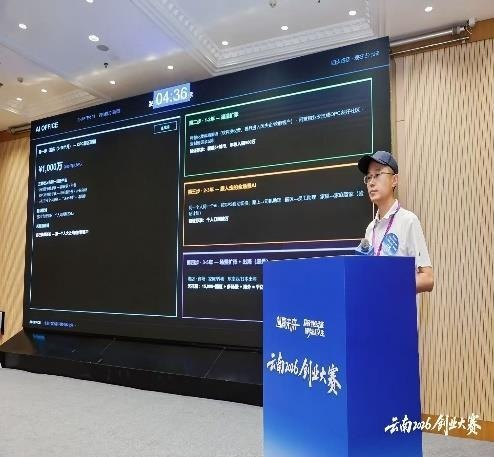
围绕 Office Claw、空间智能与园区应用开展产品介绍。
MEDIA / 媒体报道
阅读赛事相关报道，了解更多项目动态与交流活动。
CONTACT / 联系我们
欢迎就产品体验、空间试点、园区服务与合作机会联系我们。